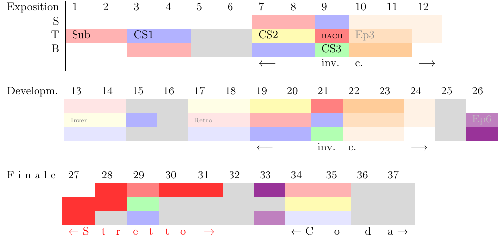
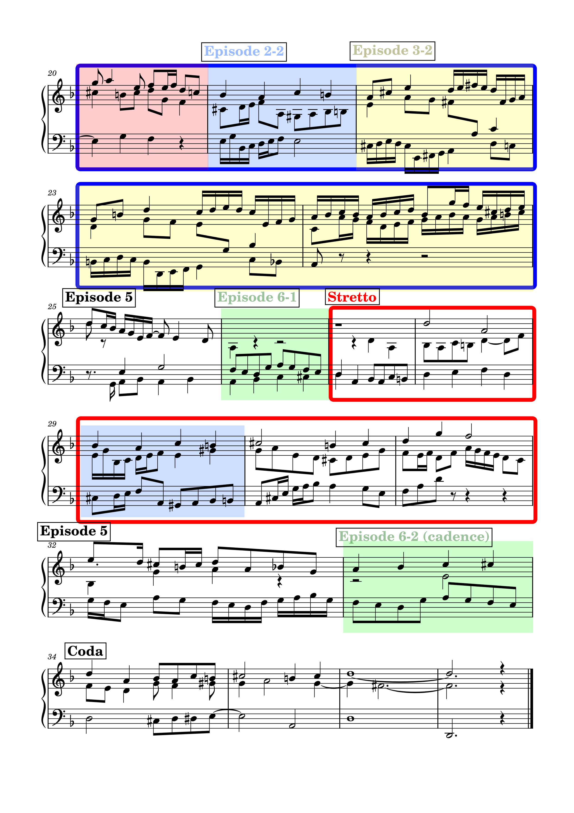
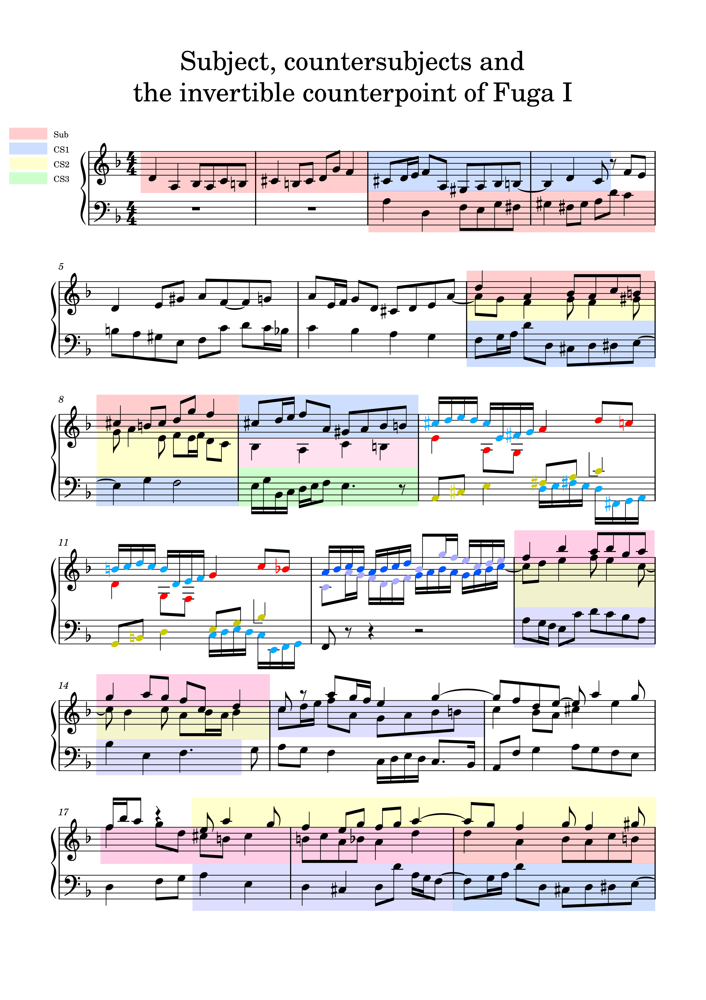
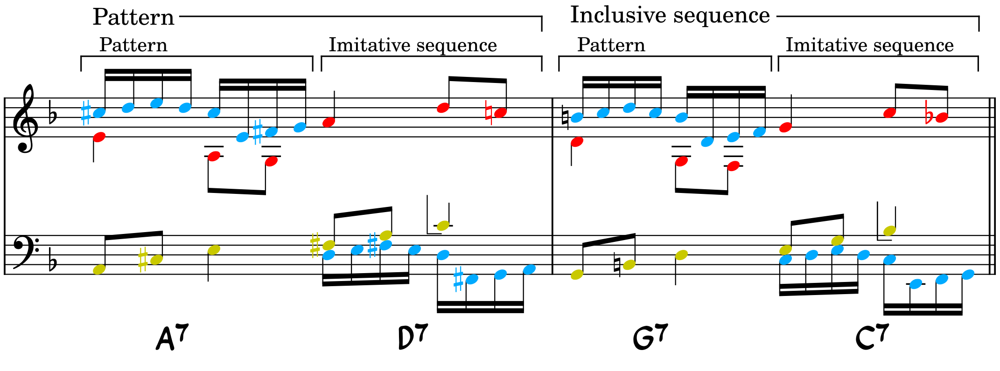
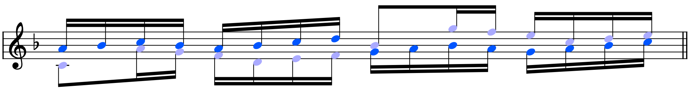
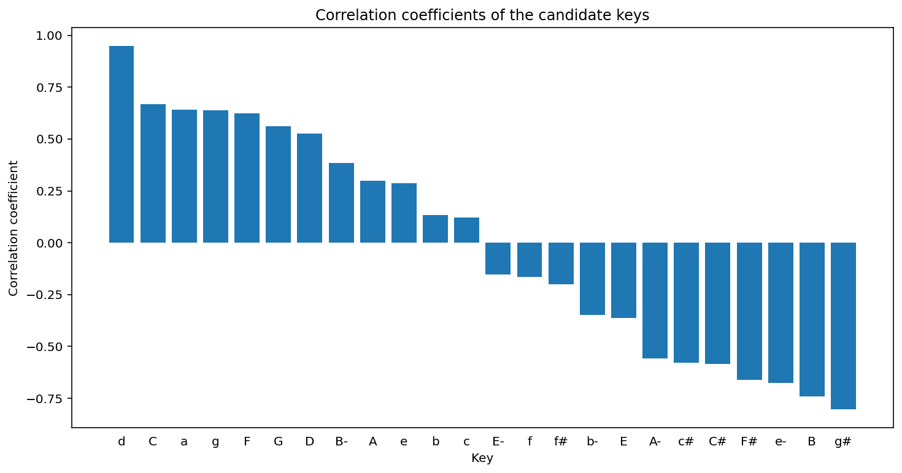
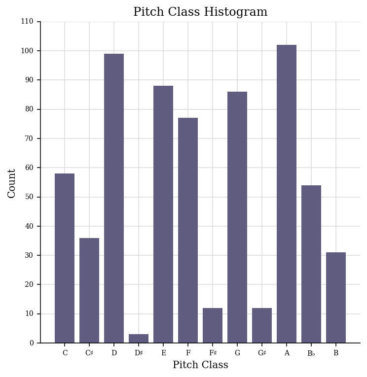
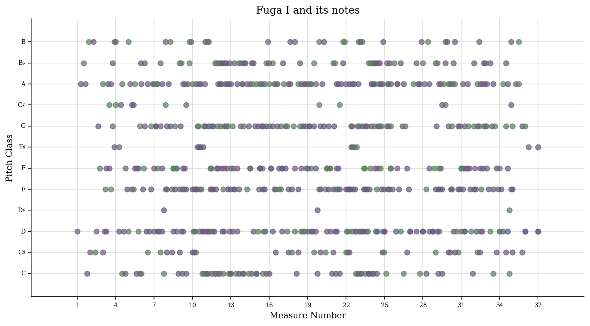

Compositional ideas behind Fuga I
Table of Contents
Francisco Kim
francisco.hk.kim@gmail.com
1 Introduction
This is a personal note of the musical ideas that were used in the composition of my Fuga I (all rights reserved, © 2020).
In the composition of this fugue in D minor, the main idea was to use the B-A-C-H motif within the counterpoint rules of the Baroque period—in particular in Bach's time. This means:
- avoid any parallel fifths/octaves and avoid direct fifths/octaves,
- avoid dissonances on strong/accented beats unless it is an essential dissonance
- resolve the melodies correctly (vertically and horizontally), e.g. the \(^{6}_{4}\) chords (2nd inversion triads) and the \(^{2}\) chords (3rd inversion seventh chords),
among other general rules.
The ideas that were used as guiding principles this fugue were as follows:
- Use and explore extensively the B-A-C-H motif and try to render this motif as melodious as possible
- Have a well-thought and well-built structure
- Employ the double/triple (invertible) counterpoint as much as possible.
2 Music/Score
The score can be found below, and the fugue can be played here:
3 Structural analysis
The structure diagram is shown in Figure 1. which shows schematically the location of the subject, countersubjects, episodes and the invertible counterpoints (inv. c.) amongst other indications. The scores with these indications can then be found in Subsection 3.2. The structure of the fugue with entries and episodes are shown on the first score. The highlighted subject,
countersubjects and the inverted counterpoint are detailed on the second score.
3.1 Structure diagram

Figure 1: Structure diagram
This fugue can be divided in three parts: measures 1-12 (in which all the voices enter successively, i.e., it is an exposition), measures 13-14 and measures 27-37. The final part of the fugue contains a stretto with an augmentation (in the upper voice) and a coda with a short (and repeated) episode that precedes it and that serves as a two-voice cadence. There is only one perfect authentic cadence in this piece with all the three voices, and it occurs at the end of the fugue. The voices collapse to just one voice at the very beginning of the coda, before opening up again with the successive entries of the subject in each voice.
There is a notable deceptive cadence in measure 5 (V → VI [I]) and a quite brutal and sudden transition from F major to D minor in measure 24, whereas there is (only) one perfect authentic cadence in this piece with all the three voices–it occurs at the end of the fugue which finishes with an Picardy third. The inverted counterpoint at the octave is profusely used in this fugue, and a voice is dropped from time to time at certain places in order to alleviate the texture of the fugue.
3.2 Score analysis
3.2.1 Entries/episodes


3.2.2 Subjects/countersujects and invertible counterpoint

4 Specific details
4.1 Zenith/nadir of the piece
The piece has a brief central part in the relative major (F major). The zenith of this fugue is in this F major section, which is generally in the higher pitch registry. The D minor section, in contrast, is much more grounded in the lower pitch registry.
4.2 The strong-beat tritone in the lower voices
In measure 9 (episode 2-1), the two lower voices form a tritone on the very first beat (E and \(\textbf{B}\flat\)) which is not allowed in principle (the fact that the dissonant interval is with the bass AND the fact that the dissonance is on the first beat). This is the only place in this fugue where such a dissonance occur, and this is to stress the B-A-C-H motif that enters with an augmentation with respect to the subject.
4.3 German sixth (übermässiger Quintsextakkord)

Figure 2: (Suggested) German sixth chord without the fifth.
The B-A-C-H motif is a chromatically difficult melodic/harmonic line to handle. This can give rise to many exciting melodic and harmonic possibilities in a freer setting of course, but it can be a difficult task within the rules of strict counterpoint.
This motif sounds mysterious and very eerie when the third voice hasn't entered yet, as the harmonic suggestion is not yet clear without the third voice and the chromatic voices are very dissonant. However, the entry of the third voice suggests a very interesting harmonic progression, with the middle voice (the secound countersubject) having a delayed resolution after the B-A-C-H motif (the augmented interval within the middle voice should be followed by a contrary motion first).
The D\(\sharp\) (Dis) suggests the VII degree of E, and one way of understanding this functionally is to think of it as the German sixth–with the fifth omitted–in the tonality of E, i.e., a chord with \(\sharp\text{IV}-\flat\text{VI}-\text{I (omitted)}-\text{III}\). It is then resolved in one of the traditional ways in the tonality of A.
4.4 Double sequence

Figure 3: (Suggested) German sixth chord without the fifth.
This passage is a double sequence, where a pattern and an imitative sequence–a sequence in which voices imitate other voices–is again used as an (inclusive) sequence. The imitative sequence is built such that the alto/tenor voice in the middle has a dactyl against an anapaest successively: making a nod to the second half of the subject.
Harmonically, the passage goes through the cycle of fifths "downwards". At the end of each measure, the last note of the middle voice is the seventh of the chords which should be resolved downwards by a half step (scale degree IV should, in principle, resolve down to III). However, as another voice (soprano) takes over the seventh of the chord and then resolves down correctly, the middle voice can go up a step to avoid a parallel octave. In this case, this also ensures that we have an inclusive sequence (i.e., in all the voices) by a step.

Figure 4: Measure wrapping up the double sequence which is again an imitative sequence.
Following the idea of pattern → sequence → contrast (or idea - → repetition → contrast/altered repetition), the next measure pursues a different melodic motifs. However, one of them is a recall of one of the motifs from the double sequence which allows a certain continuity with the double sequence. This passage is also an imitative sequence with a series of imperfect consonances (thirds and sixths), making these three measures complex yet beautiful with a lot of structure and symmetry. They come back once more later in the fugue as a triple counterpoint.
5 Appendix: Computational Musicology
We now analyse the fugue with music21, a python package developed by MIT for computer-aided musicology.
5.1 Piano roll and other graphics
First initialise music21:
from music21 import * # environment.set('musescoreDirectPNGPath', '~/.myscript/MuseScore-3.6.2-x86_64.AppImage') path = '../music21/Fuga I analysis with music21.musicxml' fugue = converter.parse(path)
We can then plot the piano roll:
# fugue.plot('pianoroll') roll = graph.plot.HorizontalBarPitchSpaceOffset(fugue) roll.title = 'Piano roll of Fuga I' roll.figureSize = (12, 6) roll.run()

And plot it with pitch classes this time:
# fugue.plot('pianoroll') roll = graph.plot.HorizontalBarPitchClassOffset(fugue) roll.title = 'Piano roll of Fuga I' roll.figureSize = (12, 6) roll.run()
By using the spline interpolation, we can plot the notes as smoothed-out curves:
import numpy as np import matplotlib.pyplot as plt from scipy import interpolate fig = plt.figure() subplot = fig.add_subplot(1, 1, 1) for i in range(len(fugue.parts)): top = fugue.parts[i].flat.notes y = [n.pitch.ps for n in top] x = [n.offset + n.quarterLength/2.0 for n in top] tick = interpolate.splrep(x, y, s=0) xnew = np.arange(x[0], max(x), 0.01) ynew = interpolate.splev(xnew, tick, der=0) subplot.plot(xnew, ynew) subplot.spines['top'].set_color('none') subplot.spines['right'].set_color('none') plt.title('Fuga I motion') plt.show()

5.2 Key center
The key is found using the Krumhansl-Schmuckler key-finding algorithm which uses the correlation coefficient
\[R = \frac{\sum\limits_{i=1}^{n}(x_i - \bar{x})(y_i - \bar{y})}{\sqrt{\sum\limits_{i=1}^{n}(x_i - \bar{x})^2 \sum\limits_{i=1}^{n}(y_i - \bar{y})^2}}\]
in which one coordinate is the profile of each note in a major or minor key and the other coordinate is the total duration of each pitch class. The profiles have been empirically established values.
tonality = fugue.analyze('key') tonality
<music21.key.Key of d minor>
The correlation coefficient is then given by
tonality.correlationCoefficient
# Out[213]: : 0.9486855347153584
The correlation coefficient of other candidate keys:
import matplotlib.pyplot as plt import numpy as np plt.figure(figsize=(12, 6)) alternateKeys = [tonality] + tonality.alternateInterpretations keys = [str(alternateKeys[i]).split()[0] for i in range(len(alternateKeys))] corrCoeffs = [alternateKeys[i].correlationCoefficient for i in range(len(alternateKeys))] xPos = np.arange(len(keys)) plt.xticks(xPos, keys) plt.xlabel('Key') plt.ylabel('Correlation coefficient') plt.title('Correlation coefficients of the candidate keys') plt.tick_params(axis = "x", bottom = False) plt.bar(xPos, corrCoeffs, align='center', width=0.8) plt.show()

The histogram of the pitch classes:
fugue.plot('histogram', 'pitchClass')

The histogram of all the pitches:
fugue.plot('histogram', 'pitch')

The scatter plot with measures and pitch classes:
scatter = graph.plot.ScatterPitchClassOffset(fugue) scatter.title = 'Fuga I and its notes' scatter.figureSize = (12, 6) scatter.run()

The scatter plot with the pitch class by quarter length:
fugue.plot('scatter', 'pitchClass', 'quarterLength')

And in 3D:
fugue.plot('3dbars')

5.3 Chords
We now combine the three voices into Chord objects:
# Chordify fugue chords = fugue.chordify() # Insert chords in fugue fugue.insert(0, chords) # Chords closed position for c in chords.recurse().getElementsByClass('Chord'): c.closedPosition(forceOctave=4, inPlace=True) # Add Roman numeral analysis for c in chords.recurse().getElementsByClass('Chord'): rn = roman.romanNumeralFromChord(c, key.Key('d')) c.addLyric(str(rn.figure)) # Show fugue.measures(0,12).show()
One possibility would be as follows:
chordsFlat = chords.flat onlyChords = chordsFlat.getElementsByClass('Chord') displayPart = stream.Part(id='displayPart') def appendChordPairs(thisChord, nextChord): # if ((thisChord.isTriad() is True or # thisChord.isSeventh() is True) and # thisChord.root().name == 'D'): closePositionThisChord = thisChord.closedPosition(forceOctave=4) closePositionNextChord = nextChord.closedPosition(forceOctave=4) m = stream.Measure() m.append(closePositionThisChord) m.append(closePositionNextChord) displayPart.append(m) for i in range(len(onlyChords) - 1): thisChord = onlyChords[i] nextChord = onlyChords[i + 1] appendChordPairs(thisChord, nextChord) displayPart.show()
But we will do something simpler and better adapted to our case:
chordsFlat = chords.flat onlyChords = chordsFlat.getElementsByClass('Chord') onlyChords.measures(0,37).show()

With the chords, it is possible to analyse the key of each measures:
for m in chords.getElementsByClass('Measure'): k = m.analyze('key') print(m.number, k)
1 a minor 2 b- minor 3 d minor 4 a minor 5 d minor 6 g minor 7 d minor 8 d minor 9 a minor 10 D major 11 C major 12 F major 13 F major 14 g minor 15 F major 16 d minor 17 d minor 18 d minor 19 d minor 20 d minor 21 a minor 22 D major 23 C major 24 F major 25 d minor 26 F major 27 G major 28 d minor 29 a minor 30 A major 31 d minor 32 d minor 33 d minor 34 d minor 35 A major 36 D major 37 b minor
This webpage was built with Org mode, using https://github.com/fniessen/org-html-themes and https://systemcrafters.net/publishing-websites-with-org-mode/building-the-site/ for publishing it.